Visualización con Seaborn: ventajas sobre Matplotlib#
Seaborn es una librería de visualización estadística construida sobre Matplotlib. No la reemplaza, sino que la complementa ofreciendo:
Ventaja de Seaborn |
Detalle |
|---|---|
Código más conciso |
Un gráfico que requiere 10+ líneas en Matplotlib se logra en 1-2 líneas con Seaborn |
Estética superior por defecto |
Paletas de colores profesionales y estilos listos para usar |
Integración con DataFrames |
Acepta directamente columnas de |
Separación por categorías automática |
Parámetros |
Gráficos estadísticos nativos |
Violin plots, KDE, pair plots, heatmaps de correlación, etc. |
Intervalos de confianza |
Muchas funciones calculan y muestran IC automáticamente |
En este cuaderno replicamos los ejemplos del cuaderno de Matplotlib para comparar ambas aproximaciones lado a lado.
1. Importar librerías y configurar estilo#
[16]:
import pandas as pd
import numpy as np
import matplotlib.pyplot as plt
import seaborn as sns
# Ventaja 1: configurar un estilo profesional en una sola línea
sns.set_theme(style="whitegrid", palette="muted", font_scale=1.1)
2. Crear el mismo conjunto de datos#
Usamos exactamente los mismos datos que en el cuaderno de Matplotlib para que la comparación sea directa.
[17]:
np.random.seed(42)
n = 200
df = pd.DataFrame({
# Variables continuas
"estatura_cm": np.random.normal(loc=168, scale=10, size=n).round(1),
"peso_kg": np.random.normal(loc=68, scale=12, size=n).round(1),
"promedio_notas": np.random.uniform(low=2.5, high=5.0, size=n).round(2),
# Variables discretas
"num_materias": np.random.poisson(lam=5, size=n),
"num_hermanos": np.random.choice([0, 1, 2, 3, 4, 5], size=n, p=[0.10, 0.25, 0.30, 0.20, 0.10, 0.05]),
"horas_estudio_semana": np.random.randint(low=2, high=25, size=n),
# Variables categóricas
"genero": np.random.choice(["Femenino", "Masculino", "Otro"], size=n, p=[0.50, 0.45, 0.05]),
"estrato": np.random.choice([1, 2, 3, 4, 5, 6], size=n, p=[0.05, 0.15, 0.35, 0.25, 0.15, 0.05]),
"carrera": np.random.choice(
["Ingeniería", "Medicina", "Derecho", "Economía", "Psicología"],
size=n, p=[0.25, 0.15, 0.20, 0.20, 0.20]),
})
df["genero"] = df["genero"].astype("category")
df["estrato"] = df["estrato"].astype("category")
df["carrera"] = df["carrera"].astype("category")
df.head()
[17]:
| estatura_cm | peso_kg | promedio_notas | num_materias | num_hermanos | horas_estudio_semana | genero | estrato | carrera | |
|---|---|---|---|---|---|---|---|---|---|
| 0 | 173.0 | 72.3 | 3.54 | 3 | 2 | 17 | Masculino | 3 | Medicina |
| 1 | 166.6 | 74.7 | 3.18 | 6 | 2 | 2 | Masculino | 3 | Ingeniería |
| 2 | 174.5 | 81.0 | 2.64 | 7 | 3 | 14 | Masculino | 1 | Economía |
| 3 | 183.2 | 80.6 | 4.66 | 8 | 0 | 24 | Femenino | 3 | Economía |
| 4 | 165.7 | 51.5 | 4.53 | 6 | 2 | 22 | Masculino | 3 | Medicina |
3. Variables Continuas#
3.1 Histograma con KDE superpuesto#
Ventaja:
sns.histplotdibuja el histograma y la curva de densidad KDE en una sola llamada conkde=True. En Matplotlib se necesita código adicional conscipyo cálculos manuales.
[18]:
# En Matplotlib: plt.hist() + cálculo manual de KDE → ~15 líneas
# En Seaborn: una sola línea por variable
fig, axes = plt.subplots(1, 3, figsize=(15, 4))
vars_continuas = ["estatura_cm", "peso_kg", "promedio_notas"]
for ax, var in zip(axes, vars_continuas):
sns.histplot(data=df, x=var, kde=True, bins=20, ax=ax)
ax.set_title(var, fontweight="bold")
fig.suptitle("Histograma + KDE — Variables continuas", fontsize=14, fontweight="bold", y=1.02)
plt.tight_layout()
plt.show()
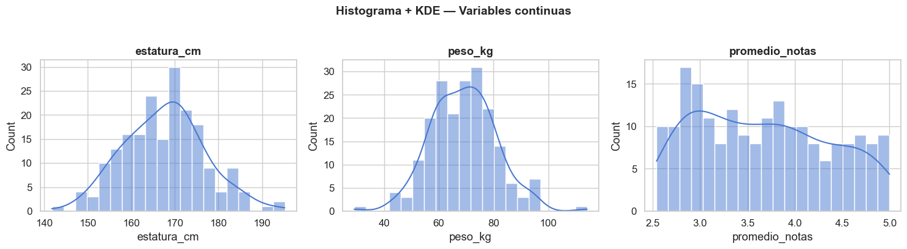
3.2 Boxplot#
Ventaja:
sns.boxplotacepta directamente un DataFrame condata=y asigna colores por paleta automáticamente. No hay que crear listas de datos manualmente ni colorear cada caja en un bucle.
[19]:
# Transformar a formato largo para graficar las 3 variables juntas
df_continuas = df[vars_continuas].melt(var_name="Variable", value_name="Valor")
fig, ax = plt.subplots(figsize=(10, 5))
sns.boxplot(data=df_continuas, x="Variable", y="Valor", palette="Set2", ax=ax)
ax.set_title("Boxplots de variables continuas", fontweight="bold", fontsize=13)
plt.tight_layout()
plt.show()
/var/folders/tf/x2jqms8n4wn8gfljd87ypbl40000gn/T/ipykernel_21815/1591287057.py:5: FutureWarning:
Passing `palette` without assigning `hue` is deprecated and will be removed in v0.14.0. Assign the `x` variable to `hue` and set `legend=False` for the same effect.
sns.boxplot(data=df_continuas, x="Variable", y="Valor", palette="Set2", ax=ax)
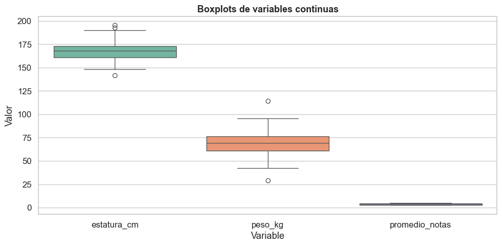
3.3 Violin plot (exclusivo de Seaborn)#
Ventaja: El violin plot no existe en Matplotlib básico. Combina un boxplot con una estimación de densidad KDE simétrica, mostrando la forma completa de la distribución.
[20]:
fig, axes = plt.subplots(1, 3, figsize=(15, 4))
for ax, var in zip(axes, vars_continuas):
sns.violinplot(data=df, y=var, inner="quartile", color="skyblue", ax=ax)
ax.set_title(var, fontweight="bold")
fig.suptitle("Violin plots — Variables continuas", fontsize=14, fontweight="bold", y=1.02)
plt.tight_layout()
plt.show()
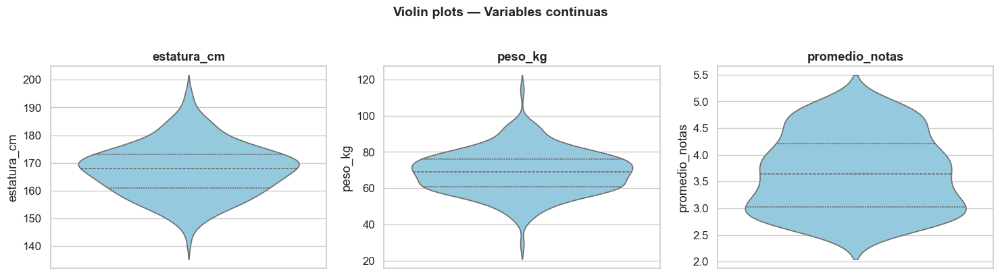
3.4 Scatter plot con regresión#
Ventaja:
sns.regplotysns.lmplotagregan automáticamente la línea de regresión + intervalo de confianza al gráfico de dispersión. En Matplotlib hay que calcular la regresión connumpyoscipymanualmente.
[21]:
# En Matplotlib: scatter + np.polyfit + plt.plot → ~10 líneas
# En Seaborn: una sola función
fig, ax = plt.subplots(figsize=(7, 5))
sns.regplot(data=df, x="estatura_cm", y="peso_kg",
scatter_kws={"alpha": 0.5, "s": 40},
line_kws={"color": "red"},
ax=ax)
ax.set_title("Estatura vs Peso (con regresión lineal e IC 95%)", fontweight="bold", fontsize=12)
plt.tight_layout()
plt.show()
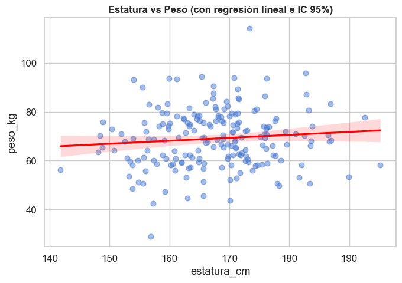
4. Variables Discretas#
4.1 Gráfico de conteo#
Ventaja:
sns.countplotcuenta automáticamente las frecuencias de cada valor. En Matplotlib primero hay que calcularvalue_counts()y luego pasar los datos aplt.bar().
[22]:
vars_discretas = ["num_materias", "num_hermanos", "horas_estudio_semana"]
fig, axes = plt.subplots(1, 3, figsize=(16, 4))
for ax, var in zip(axes, vars_discretas):
sns.countplot(data=df, x=var, color="steelblue", ax=ax)
ax.set_title(var, fontweight="bold")
ax.set_xlabel("")
fig.suptitle("Conteo de frecuencias — Variables discretas", fontsize=14, fontweight="bold", y=1.02)
plt.tight_layout()
plt.show()
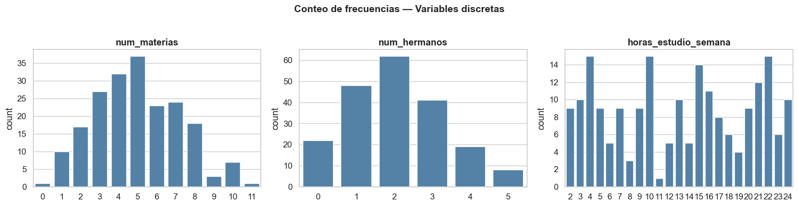
4.2 Histograma discreto con estadístico#
Ventaja:
sns.histplotcondiscrete=Trueajusta automáticamente los bins para que estén centrados en cada valor entero.
[23]:
fig, axes = plt.subplots(1, 3, figsize=(16, 4))
for ax, var in zip(axes, vars_discretas):
sns.histplot(data=df, x=var, discrete=True, kde=True,
color="mediumpurple", ax=ax)
ax.set_title(var, fontweight="bold")
fig.suptitle("Histograma discreto + KDE", fontsize=14, fontweight="bold", y=1.02)
plt.tight_layout()
plt.show()
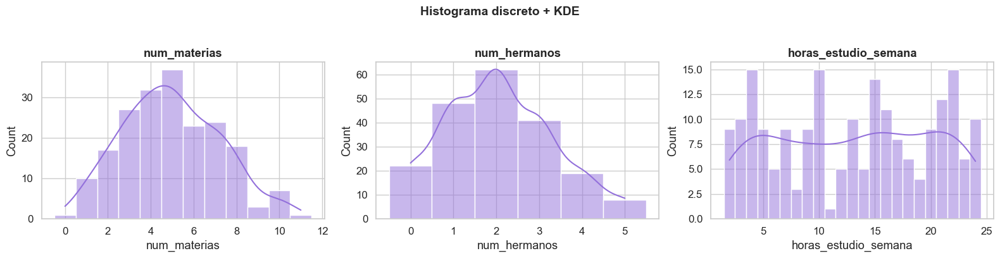
4.3 Strip plot (exclusivo de Seaborn)#
Ventaja: El strip plot muestra cada observación individual como un punto. Es especialmente útil para variables discretas con pocos valores, donde un histograma puede ocultar la densidad real.
[24]:
fig, ax = plt.subplots(figsize=(8, 4))
sns.stripplot(data=df, x="num_hermanos", y="horas_estudio_semana",
jitter=True, alpha=0.5, palette="viridis", hue="num_hermanos",
legend=False, ax=ax)
ax.set_title("Horas de estudio según número de hermanos", fontweight="bold", fontsize=12)
ax.set_xlabel("Número de hermanos")
ax.set_ylabel("Horas de estudio semanal")
plt.tight_layout()
plt.show()
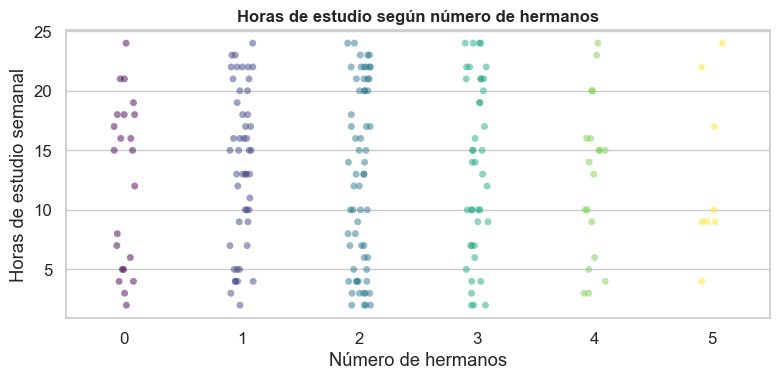
5. Variables Categóricas#
5.1 Gráfico de conteo con hue#
Ventaja: El parámetro
huepermite separar por colores una segunda variable categórica sin escribir bucles ni código adicional. En Matplotlib esto requiere múltiples llamadas aplt.barcon offsets calculados manualmente.
[25]:
# Conteo de carrera, separado por género — una sola línea
fig, ax = plt.subplots(figsize=(9, 5))
sns.countplot(data=df, x="carrera", hue="genero", palette="Set2", ax=ax)
ax.set_title("Estudiantes por carrera y género", fontweight="bold", fontsize=13)
ax.set_xlabel("")
ax.legend(title="Género")
plt.tight_layout()
plt.show()
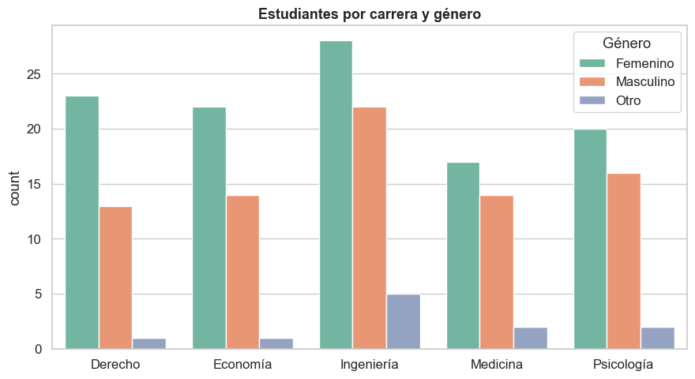
5.2 Gráfico de barras con estimador estadístico#
Ventaja:
sns.barplotcalcula automáticamente la media (u otro estimador) y muestra barras de error (intervalo de confianza). En Matplotlib hay que calcular medias, errores estándar y pasarlos manualmente.
[26]:
# Media del promedio de notas por carrera, con IC 95% automático
fig, ax = plt.subplots(figsize=(9, 5))
sns.barplot(data=df, x="carrera", y="promedio_notas", palette="coolwarm",
errorbar="ci", ax=ax)
ax.set_title("Promedio de notas por carrera (media ± IC 95%)", fontweight="bold", fontsize=12)
ax.set_xlabel("")
ax.set_ylabel("Promedio de notas")
plt.tight_layout()
plt.show()
/var/folders/tf/x2jqms8n4wn8gfljd87ypbl40000gn/T/ipykernel_21815/159572224.py:3: FutureWarning:
Passing `palette` without assigning `hue` is deprecated and will be removed in v0.14.0. Assign the `x` variable to `hue` and set `legend=False` for the same effect.
sns.barplot(data=df, x="carrera", y="promedio_notas", palette="coolwarm",
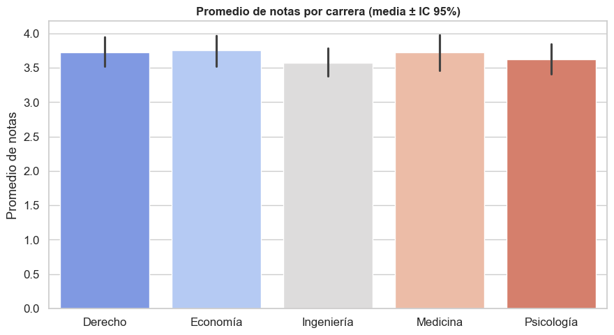
5.3 Pie chart#
Seaborn no tiene función propia para gráficos circulares, ya que generalmente se desaconsejan para análisis estadístico (las longitudes de arco son más difíciles de comparar que las alturas de barras). Para este caso seguimos usando matplotlib.pyplot.pie.
[27]:
# Pie chart con la paleta de colores de Seaborn
colores = sns.color_palette("Set2", n_colors=df["carrera"].nunique())
fig, ax = plt.subplots(figsize=(6, 6))
conteos = df["carrera"].value_counts()
ax.pie(conteos.values, labels=conteos.index, autopct="%1.1f%%",
colors=colores, startangle=90,
wedgeprops={"edgecolor": "white", "linewidth": 1.5})
ax.set_title("Distribución por carrera", fontweight="bold", fontsize=13)
plt.tight_layout()
plt.show()
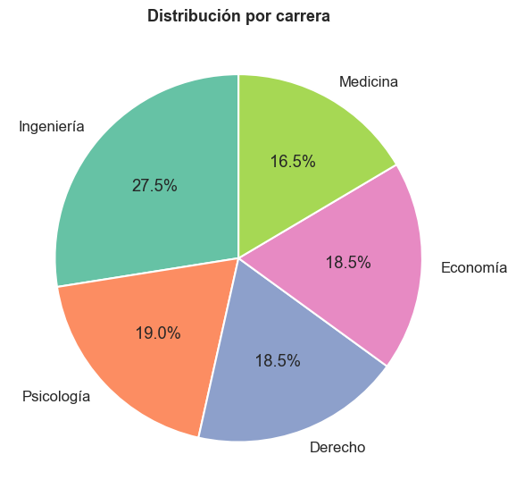
6. Análisis cruzado: la gran fortaleza de Seaborn#
6.1 Boxplot por categoría#
Ventaja: Separar un boxplot por categoría es directamente
x="categoría",y="numérica". En Matplotlib hay que filtrar datos y construir listas manualmente.
[28]:
# En Matplotlib: filtrar datos por carrera, crear lista, colorear cada caja → ~18 líneas
# En Seaborn: una línea
fig, ax = plt.subplots(figsize=(9, 5))
sns.boxplot(data=df, x="carrera", y="promedio_notas", palette="Set3", ax=ax)
ax.set_title("Promedio de notas por carrera", fontweight="bold", fontsize=13)
ax.set_xlabel("")
plt.tight_layout()
plt.show()
/var/folders/tf/x2jqms8n4wn8gfljd87ypbl40000gn/T/ipykernel_21815/1531949462.py:5: FutureWarning:
Passing `palette` without assigning `hue` is deprecated and will be removed in v0.14.0. Assign the `x` variable to `hue` and set `legend=False` for the same effect.
sns.boxplot(data=df, x="carrera", y="promedio_notas", palette="Set3", ax=ax)
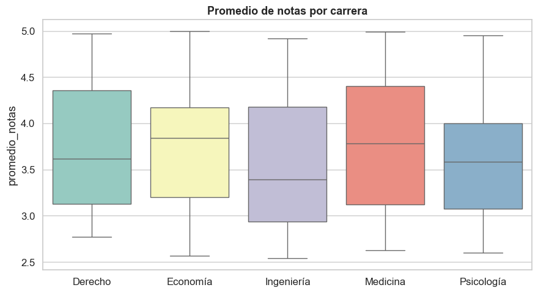
6.2 Violin plot por categoría con hue#
Ventaja: Combinar una variable numérica, una categórica en el eje x, y otra categórica con
huerequiere una sola línea. Intente reproducir esto con Matplotlib puro.
[29]:
# Filtrar solo Femenino y Masculino para mejor lectura visual
df_fm = df[df["genero"].isin(["Femenino", "Masculino"])].copy()
df_fm["genero"] = df_fm["genero"].cat.remove_unused_categories()
fig, ax = plt.subplots(figsize=(10, 5))
sns.violinplot(data=df_fm, x="carrera", y="estatura_cm", hue="genero",
split=True, inner="quartile", palette={"Femenino": "#E07A5F", "Masculino": "#3D405B"},
ax=ax)
ax.set_title("Distribución de estatura por carrera y género", fontweight="bold", fontsize=13)
ax.set_xlabel("")
ax.legend(title="Género")
plt.tight_layout()
plt.show()
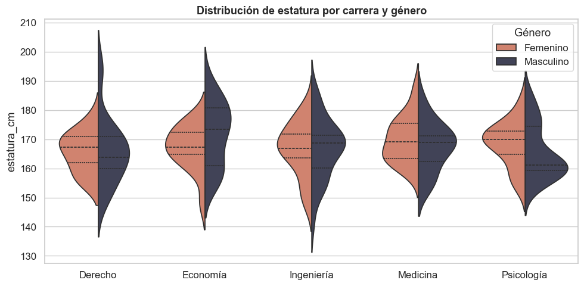
6.3 Histogramas superpuestos con hue#
Ventaja: En Matplotlib se necesita un bucle para superponer histogramas por grupo. En Seaborn basta con
hue="genero".
[30]:
# En Matplotlib: bucle por género + plt.hist() con alpha → ~8 líneas
# En Seaborn: una sola línea
fig, ax = plt.subplots(figsize=(8, 5))
sns.histplot(data=df, x="estatura_cm", hue="genero", bins=15,
alpha=0.55, kde=True, palette=["#E07A5F", "#3D405B", "#81B29A"], ax=ax)
ax.set_title("Distribución de estatura por género", fontweight="bold", fontsize=13)
plt.tight_layout()
plt.show()
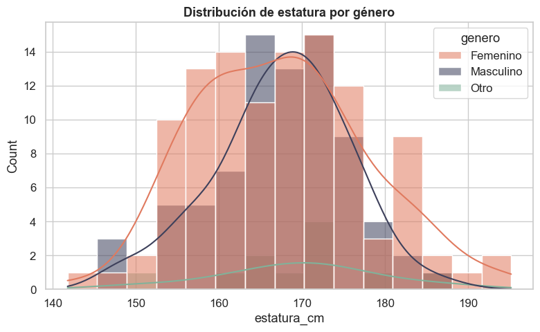
7. Gráficos exclusivos de Seaborn#
Estas visualizaciones no existen en Matplotlib y requieren Seaborn (o mucho código manual).
7.1 Pair plot#
El pair plot genera una matriz de gráficos de dispersión para todas las combinaciones de variables numéricas y la diagonal muestra la distribución de cada una.
[31]:
# Una sola línea genera N×N gráficos con separación por color
sns.pairplot(df[["estatura_cm", "peso_kg", "promedio_notas", "genero"]],
hue="genero", palette={"Femenino": "#E07A5F", "Masculino": "#3D405B", "Otro": "#81B29A"},
diag_kind="kde", plot_kws={"alpha": 0.5, "s": 30})
plt.suptitle("Pair plot — Variables continuas por género", fontweight="bold", y=1.02)
plt.show()
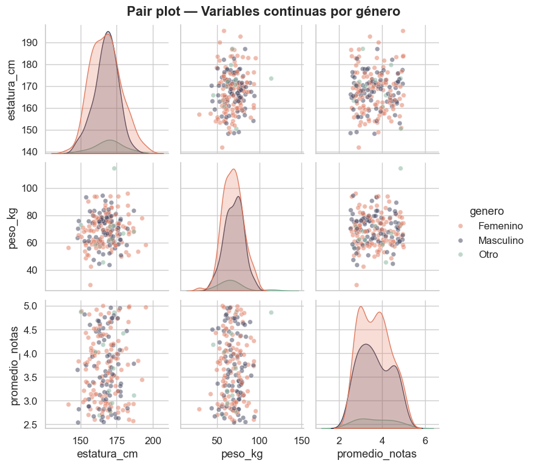
7.2 Heatmap de correlación#
El heatmap colorea una matriz de correlación para identificar rápidamente relaciones fuertes entre variables.
[32]:
vars_numericas = ["estatura_cm", "peso_kg", "promedio_notas",
"num_materias", "num_hermanos", "horas_estudio_semana"]
fig, ax = plt.subplots(figsize=(8, 6))
sns.heatmap(df[vars_numericas].corr(), annot=True, fmt=".2f",
cmap="coolwarm", center=0, linewidths=0.5, ax=ax)
ax.set_title("Matriz de correlación", fontweight="bold", fontsize=13)
plt.tight_layout()
plt.show()
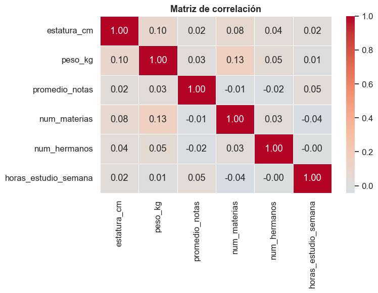
7.3 FacetGrid: grilla de subgráficos por categoría#
Ventaja:
FacetGrid(o los parámetroscolyrow) generan automáticamente un subgráfico por cada valor de una variable categórica. Reproducir esto en Matplotlib requiere gestionar subplots manualmente.
[33]:
# Histograma de estatura, un panel por cada carrera
g = sns.displot(data=df, x="estatura_cm", col="carrera", col_wrap=3,
kde=True, height=3.5, aspect=1.2, color="steelblue")
g.fig.suptitle("Distribución de estatura por carrera", fontweight="bold", y=1.02)
plt.show()
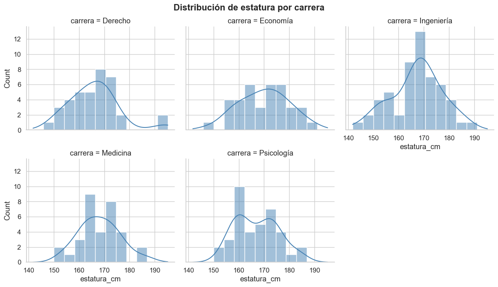
7.4 Joint plot: distribuciones marginales#
El joint plot combina un scatter (o KDE) con los histogramas marginales de cada eje en un solo gráfico.
[34]:
sns.jointplot(data=df, x="estatura_cm", y="peso_kg",
kind="scatter", marginal_kws={"bins": 20},
height=6, color="steelblue")
plt.suptitle("Joint plot: Estatura vs Peso", fontweight="bold", y=1.02)
plt.show()
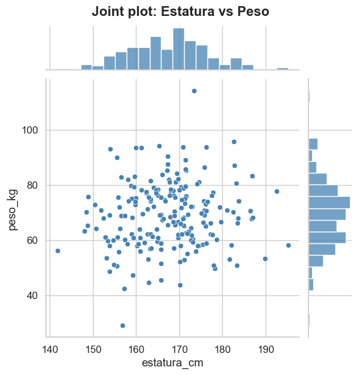
8. Combinando Seaborn + Matplotlib: ajustes finos#
Como Seaborn genera objetos de Matplotlib (Figure, Axes), podemos usar toda la API de Matplotlib para personalizar el gráfico después de crearlo. Este es el flujo recomendado en la práctica:
Seaborn genera la base del gráfico (datos, colores, estadísticas).
Matplotlib ajusta detalles: anotaciones, líneas de referencia, formato de ejes, leyendas personalizadas, etc.
[35]:
# --- Paso 1: Seaborn genera el gráfico base ---
fig, ax = plt.subplots(figsize=(10, 6))
sns.boxplot(data=df, x="carrera", y="promedio_notas", palette="Set2",
width=0.6, ax=ax)
# --- Paso 2: Ajustes finos con Matplotlib ---
# Línea de referencia horizontal (promedio general)
media_global = df["promedio_notas"].mean()
ax.axhline(y=media_global, color="red", linestyle="--", linewidth=1.2, alpha=0.8)
ax.text(4.55, media_global + 0.03, f"Media global: {media_global:.2f}",
color="red", fontsize=10, fontstyle="italic", ha="right")
# Anotar la mediana de cada carrera sobre cada caja
medianas = df.groupby("carrera")["promedio_notas"].median()
for i, carrera in enumerate(ax.get_xticklabels()):
nombre = carrera.get_text()
med = medianas[nombre]
ax.annotate(f"{med:.2f}",
xy=(i, med), xytext=(0, -18),
textcoords="offset points", ha="center",
fontsize=9, fontweight="bold", color="white",
bbox=dict(boxstyle="round,pad=0.2", facecolor="#333", alpha=0.75))
# Sombrear zona de "aprobación" (nota ≥ 3.0)
ax.axhspan(3.0, ax.get_ylim()[1], color="green", alpha=0.05)
ax.text(4.55, 3.05, "Zona de aprobación (≥ 3.0)", color="green",
fontsize=9, fontstyle="italic", ha="right", alpha=0.7)
# Personalización de ejes y formato
ax.set_title("Promedio de notas por carrera\n(con ajustes finos de Matplotlib)",
fontsize=14, fontweight="bold")
ax.set_xlabel("")
ax.set_ylabel("Promedio de notas", fontsize=11)
ax.tick_params(axis="x", labelsize=11, rotation=0)
ax.spines["top"].set_visible(False)
ax.spines["right"].set_visible(False)
plt.tight_layout()
plt.show()
/var/folders/tf/x2jqms8n4wn8gfljd87ypbl40000gn/T/ipykernel_21815/881844722.py:3: FutureWarning:
Passing `palette` without assigning `hue` is deprecated and will be removed in v0.14.0. Assign the `x` variable to `hue` and set `legend=False` for the same effect.
sns.boxplot(data=df, x="carrera", y="promedio_notas", palette="Set2",
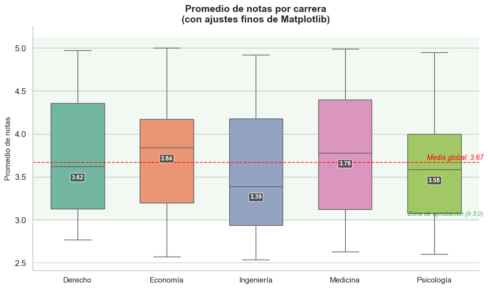
En este ejemplo, Seaborn se encargó de:
Calcular los cuartiles, medianas y outliers del boxplot
Asignar colores automáticamente con
palette="Set2"Integrar el DataFrame directamente con
data=df
Mientras que Matplotlib aportó los ajustes finos:
ax.axhline()→ línea de referencia de la media globalax.annotate()→ etiquetas de mediana con fondo oscuro sobre cada cajaax.axhspan()→ sombreado de zona de aprobaciónax.text()→ anotaciones de texto libreax.spines[...].set_visible(False)→ eliminar bordes innecesarios
Esta combinación es la forma más productiva de trabajar: rapidez de Seaborn + control total de Matplotlib.
9. Comparación resumida: Matplotlib vs Seaborn#
Aspecto |
Matplotlib |
Seaborn |
|---|---|---|
Histograma + KDE |
|
|
Boxplot por categoría |
Filtrar datos + bucle + colorear cajas |
|
Scatter + regresión |
|
|
Barras agrupadas |
Calcular offsets + múltiples |
|
Histogramas por grupo |
Bucle por cada grupo |
|
Violin plot |
No disponible nativo |
|
Pair plot |
N×N subplots manuales |
|
Heatmap |
|
|
FacetGrid |
Gestión manual de subplots |
|
Joint plot |
No disponible nativo |
|
Pie chart |
|
No disponible (usa |
Personalización fina |
Control total sobre cada elemento |
Menos flexible (pero usa Matplotlib debajo) |
Conclusión#
Seaborn es ideal para exploración rápida y visualización estadística: menos código, mejores defaults, separación por grupos automática.
Matplotlib ofrece control total sobre cada elemento del gráfico: esencial para personalizaciones muy específicas o gráficos no estadísticos.
En la práctica se usan juntos: Seaborn para generar la base del gráfico y Matplotlib para ajustes finos posteriores.